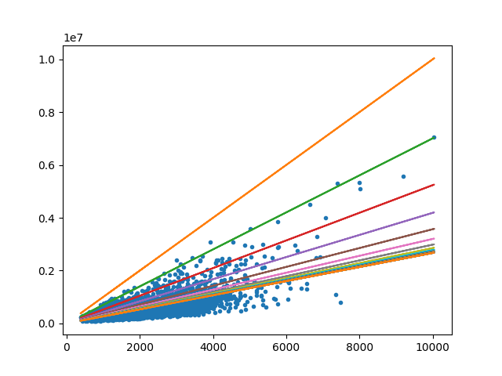
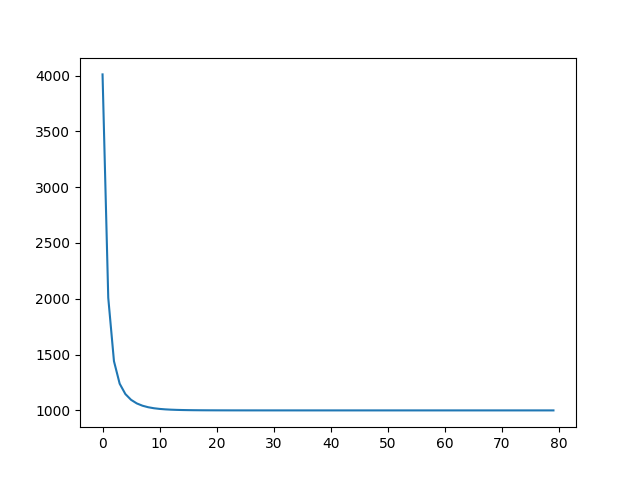

2021-02-07
Es el estudio de algoritmos de computador que se mejoran automáticamente por medio de la experiencia. Usan un un modelo basado en datos de entrenamiento para hacer predicciones o decisiones sin ser programado específicamente para eso.
El machine learning busca que sea el mismo computador el que cree el algoritmo necesario para resolver un problema, ya que puede ser un problema tan complejo, que crear un algoritmo para resolver el problema puede ser demasiado desafiante para que un humano pueda desarrollarlo.
Inteligencia artificial puede considerarse cualquier algoritmo que lleve a un computador a tomar decisiones “inteligentes” basadas en datos de entrada. Puede abarcar campos desde la gestion de procesos industriales hasta los videojuegos, pero generalmente representa comportamientos de inteligencia humana plasmados en algoritmos. Machine learning es un tipo de IA donde se busca que sea la misma máquina la que llega a este “conocimiento” mediante un proceso de aprendizaje de la máquina o “entrenamiento”.
La diferencia particular del machine learning es que el algoritmo final es generado por la misma máquina basado en observaciones. Basado en esto se puede identificar una aplicación de machine learning si requiere de datos iniciales para ser entrenada. Además de esto la aplicación de machine learning se puede hacer mejor cada vez a medida que es usada y entrenada, mientras que otro tipo de inteligencia artificial va a generar los mismos resultados ante los mismos estímulos.
Seguridad, en la deteccion de rostro por medio de grabaciones de camaras de seguridad Busqueda en linea, el sistemas de busqueda que manejan los navegadores Procesamiento de lenguage natural, como lo es Alexa y Siri que reconocen la voz y el idioma
Prediccion de fallos en una maquinaria, esto ayuda a prevenir fallos graves y costosos, ademas de poder programar la reparacion de la maquinaria sin dañar la productividad. Auto ajustes en una aplicacion, la aplicacion se ajusta a los gustos del usuario y le da opciones basado en los gustos, constumbres y/o necesidades. Analisis de imagenes de alta calidad, con este tipo de imagenes se le enseña que tipo de imagenes se esta buscando.
Ya que
Prediccion de fallos en una maquinaria, ya que con esto se puede programar detencion de la maquinaria y cambiar los implementos necesarios previniendo fallos graves y costosos. Analisis de imagenes, por medio de grabaciones en la deteccion del rostro o por medio de una camara para emparejar las imagenes y hacer un espaciado 3D del entorno.
Para predicir un fallo solo es con las con las estadisticas de las piezas que contienen en el manual programando una mantenimiento para revisar el estado de la pieza En el analisis de imagenes para la deteccion de rostros tocaria pausar el video y seleccionar la parte de la imagen donde se encuentre el rostro.
Es un modelo matemático para aproximar la relacion entre una variable dependiente y varias variables independientes.
La manera de lograr esto es partir de una funcion lineal (o cualquier función), y mediante un proceso iterativo se busca que esta función se vaya adaptando a un resultado, buscando reducir al máximo la diferencia entre la función y los datos con los que se compara. Es decir, se busca minimizar la diferencia entre los datos reales y la función lineal (o cualquier otra)
Para lograr esto es conveniente tener una manera de medir esta diferencia. Esto se hace con una función de costo que nos indique numéricamente qué tan cerca de los datos reales está nuestra predicción. Una función de costo popular es la función del error cuadrático medio mostrada a continuación:
ECM = 1/n * sum( (prediccion_i - dato_i)^2 )Para buscar la aproximación óptima (la que tenga el error mínimo) es necesario ajustar las influencias de las variables independientes sobre la predicción. Este proceso se hace de manera iterativa usando el concepto de descenso de gradiente.
El descenso de gradiente, de manera resumida, consiste en tomar dos predicciones A y B (con dos valores de influencia cercanos) y evaluar cuál de las predicciones es más acertada (usando nuestra función de costo). Luego de esto podemos ajustar las influencias del modelo en la dirección que tiende a reducirse el error de la predicción. De esta manera cada nuevo paso va reduciendo el error.
Considere el escenario de predecir el valor de una casa dependiendo del área. Adquiera o genere un dataset que represente el problema. Tomando como base la regresión lineal, se tiene que el valor de una casa es una función del área
y = A0 + A1*xDonde y es el valor predicho y x es el área en metros cuadrados, el modelo lineal tiene los parámetros A0 y A1, el problema de Machine learning es encontrar los valores de los parámetros A0 y A1 que adapten el modelo a los datos.
En Machine Learning el método mas comúnmente aplicado para estimar los parámetros de un modelo es el gradiente descendente, para ello se requiere diseñar una función de costo.
La función de costo planteada para la regresión lineal es el error cuadrado medio (Mean Squared Errror) definida de esta manera:
def mse(a, b):
return np.sum(np.square(b - a))/a.shape[0]Consiste en promediar el valor de las (diferencias entre valor real y valor esperado) al cuadrado.
Inicialmente probaremos el resultado de aplicar el descenso de gradiente en los datos sin ajustar.
Starting weights: [1000. 500.] # Set arbitrarily
Starting MSE: 2819766538489.7344
Final weights: [266.77621149 492.15685172]
Final MSE: 77222387560.08604

A continuación analizamos las diferencias al hacer el ejercicio usando los datos normalizados
Considere ahora que existe más de una característica para predecir el valor de la casa, ej. área, numero de habitaciones, años de construcción, etc. Así el modelo se convierte en:
y = A0 + A1 X1 + A2 X2 + ... + AnX
Considere el escenario donde se quiere saber si un tumor es maligno o benigno. Se asume que dicha condiciónd epende del tamaño del tumor. Para este problema se considera que existen 2 clases, tumor maligno (identificada como y=1) y tumor benigno (identificada como y=0) en machine learning la herramienta más sencilla para generar un l ímite o frontera de decisión (decision boundary) es la regresión logística, cuyo modelo matemático es:
p = 1 / (1+exp(x))donde p indica el grado de pertenencia (a veces probabilidad) de la observación x a una categoría o clase, para el ejemplo mencionado tumor maligno o benigno.
En este apartado debe realizar una autoevaluación del proceso desarrollado y de las habilidades adquiridas con las actividades propuestas. Para ello responda las siguientes preguntas otorgando el valor porcentual (0 - 100 %) a cada una de ellas.
¿Desarrolló la totalidad de las actividades propuestas?
¿La metodología le permitió construir saberes significativos que le aporten al desarrollo del tema planteado?
¿Qué tanto fue su grado de dedicación durante el desarrollo de las actividades planteadas?
¿Qué tanto fue su grado de interés en el tema propuesto?
Otorgue un valor porcentual a cada uno de los indicadores de las metas propuestas según su cumplimiento
En esta sección se espera que a partir de lo vivido durante el desarrollo de las actividades propuestas, Ud pueda dar algunas recomendaciones o sugerencias sobre el tema y el desarrollo de las mismas. Tenga en cuenta que sus aportes enriquecen el ejercicio docente, gracias.